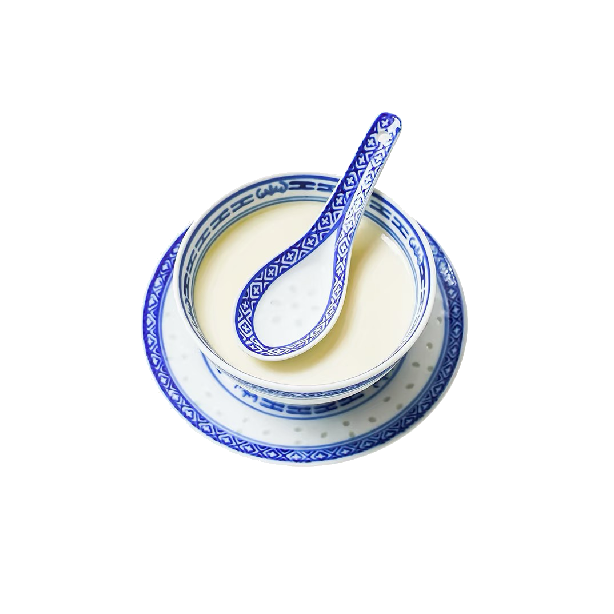

Ginger Milk Curd
Instructions
1.Peel and grate the young ginger, then press to extract the juice. Pour the juice into a serving bowl.
2.Heat the buffalo milk with sugar until it reaches 70–80°C (around 160–175°F). Do not let it boil.
3.Quickly pour the hot milk into the ginger juice. Do not stir.
4.Cover and let it sit for a few minutes until the mixture sets into a smooth, delicate curd.
5.Serve warm.
Tip: The temperature of the milk is the key—too hot or too cold will prevent it from setting. Around 75°C (167°F) works best, and rarely fails.
Ginger Milk Curd is a traditional famous snack in Shunde, Guangdong Province, and it is one of the representatives of Cantonese sweet soups. Its uniqueness lies in the natural coagulation reaction between the enzymes in ginger juice and hot milk, without the need to add additional eggs or starch. It is said to have originated in rural households in Shunde, used to warm the stomach and dispel the cold in winter. Later, it gradually evolved into a classic dessert in sugar water shops and tea houses. Ginger Milk Curd has a tender and smooth texture, with a blend of the spiciness of ginger and the aroma of milk. It is not only a delicious dessert but also has therapeutic values of warming the stomach, dispelling cold and promoting blood circulation.
Ingredients
18 g fresh ginger juice (use more if you prefer a stronger, spicier kick)
200 g buffalo milk
15 g granulated sugar